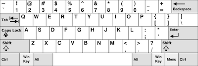
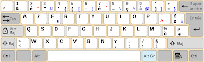
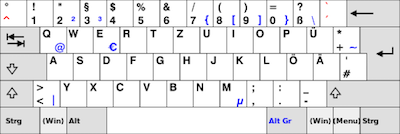

<!DOCTYPE html>
<html>
    <head>
    <meta charset="UTF-8">
    
    <title>Primed Lexical Decision Experiment</title>

    <script src="https://web-experiments.lab.hum.uu.nl/jspsych/6.1.0/jspsych.js"></script>
    <script src="https://web-experiments.lab.hum.uu.nl/jspsych/6.1.0/plugins/jspsych-html-keyboard-response.js"></script>
    <script src="https://web-experiments.lab.hum.uu.nl/jspsych/6.1.0/plugins/jspsych-html-button-response.js"></script>

    <!-- Generic check/ask libraries -->
    <script src="https://web-experiments.lab.hum.uu.nl/jspsych/6.1.0/plugins/jspsych-audio-button-response.js"></script>
    <script src="https://web-experiments.lab.hum.uu.nl/jspsych/6.1.0/plugins/jspsych-instructions.js"></script>
    <script src="https://web-experiments.lab.hum.uu.nl/jspsych/6.1.0/plugins/jspsych-survey-html-form.js"></script>
    <script src="https://web-experiments.lab.hum.uu.nl/jspsych/6.1.0/plugins/jspsych-survey-multi-choice.js"></script>
    <!-- Generic jspsych style sheets -->
    <link href="https://web-experiments.lab.hum.uu.nl/jspsych/6.1.0/css/jspsych.css" rel="stylesheet" type="text/css"/>

    <!-- Uil OTS libraries -->
    <script src="https://web-experiments.lab.hum.uu.nl/jspsych/uil-utils/dev/jspsych-uil-utils.js"></script>

    <!-- Uil OTS scripts -->
    <script src="stimuli.js"></script>
    <script src="globals.js"></script>
    <script src="instructions.js"></script>
    <style>

    .stimulus { 
        font-size: 30px; 
        font-family: monospace;
        font-weight: normal;
    }

    .instruction {
        text-align: left;
        margin: 5% 10% 5% 10%;
    }

    kbd {
        border-radius: 2px;
        padding: 2px;
        border: 1px solid black;
    }
    
    input,
    label {
        margin: .4rem 0;
    }

    span::after {
        padding-left: 5px;
    }

    input:invalid + span::after {
        content: '✖';
    }

    input:valid+span::after {
          content: '✓';
    }

    </style>
    </head>
    <body></body>
    <script>
    
    // Wait till the browser has loaded all files, then execute the
    // contents of this method
    
    //window.addEventListener('load', function() {
        var stimuli = pickRandomGroup();
        //stimuli.table = 

        // data one would like to add to __all__ trials, according to:
        // https://www.jspsych.org/overview/data/
        var subject_id = jsPsych.randomization.randomID(8);
        var group_name = stimuli.group_name;

        jsPsych.data.addProperties(
            {
                subject: subject_id,
                group: group_name,
                keyboard: undefined,
                left_key_for_layout: undefined,
                right_key_for_layout: undefined,
            });
        
        //////////////// test page flows ///////////////////////////////

        var start_screen = {
            type: 'html-button-response',
            stimulus: function(){
                return "<div class='instruction' >" +
                    '<p>' + GENERIC_CHECK + '</p></div>';
            },
            choices: [OK_BUTTON_TEXT],
            response_ends_trial: true,
            on_load: function(){
                var iamamobile = uil.isMobileOrTablet();
                if (iamamobile == true){
                    console.log('tablet/mobile');
                    jsPsych.endExperiment("The experiment was ended because we fear you are not on the right type of device to proceed. You're on a laptop or PC with audio and keyboard and mouse or trackpad available, right? If not, please come back here on a device that qualifies!")
                } else {
                    console.log("This device might be alright to proceed!");
                }
            },
            data: {
                useful_data_flag: false
            }
        };

        ////////////// survey-related

        var survey_valid_year_html_number = {
            type: 'survey-html-form',
            preamble: '<p>' + YEAR_BORN_QUESTION + '</p>',
            html: '<input type="number" id="birth_year" name="birth_year" placeholder=1999 min=1919 max=2019 required>' +
                '<span class="validity"></span><BR>',
            data: {
                useful_data_flag: false,
                survey_data_flag: true
            },
            on_finish: function(data){
                var year_born = birth_year;
                data.birth_year = year_born;
                console.log(data.birth_month);
            }
        };


        var survey_valid_month_html_number = {
            type: 'survey-html-form',
            preamble: '<p>' + MONTH_BORN_QUESTION + '</p>',
            html: '<input type="number" id="birth_month" name="birth_month" placeholder=7 min=1 max=12 required>' +
                '<span class="validity"></span><BR>',
            data: {
                useful_data_flag: false,
                survey_data_flag: true
            },
            on_finish: function(data){
                var month_born = birth_month;
                data.birth_month = month_born;
                console.log(data.birth_month);
            }
        };

        var survey_valid_language_html_text = {
            type: 'survey-html-form',
            preamble: '<p>' + NATIVE_LANGUAGE_QUESTION + '</p>',
            html: '<input type="text" id="native_language" name="native_language" pattern="[a-zA-Z]+" placeholder="Dutch" required>' +
                '<span class="validity"></span><BR>',
            data: {
                useful_data_flag: false,
                survey_data_flag: true
            },
            on_finish: function(data){
                var mother_tongue = native_language;
                data.native_language = mother_tongue;
                console.log(data.native_language);
            }
        };

        // this multi-choice is a very usable plugin, since it has built-in
        // validation..

        var survey_multi_choice_block = {
            type: 'survey-multi-choice',
            questions: [
                {
                    prompt: BILINGUAL_QUESTION,
                    name: 'Multilingual',
                    options: BILINGUAL_OPTIONS,
                    required:true,
                    horizontal: true
                },
                {
                    prompt: DYSLEXIC_QUESTION,
                    name: 'Dyslexic',
                    options: DYSLEXIC_OPTIONS,
                    required: true,
                    horizontal: true
                },
                {
                    prompt: GENDER_QUESTION,
                    name:'Gender',
                    options: GENDER_OPTIONS,
                    required: true,
                    horizontal: true
                },
                {
                    prompt: HAND_QUESTION,
                    name:'HandPreference',
                    options: HAND_OPTIONS,
                    required: true,
                    horizontal: true
                }
            ],
            on_finish: function(data){
                var survey_multi = data.responses;
                data.survey_multi = survey_multi;

                //console.log(data.survey_multi); 

                jsPsych.data.get().addToAll({'survey': data.responses});
            }
        };

        // generic tests 
        var test_audio_start = {
            type: 'html-button-response',
            stimulus: function(){
                return "<div class='instruction' >" +
                    '<p>' + AUDIO_CHECK_ONE + '</p></div>';
            },
            choices: [OK_BUTTON_TEXT],
            response_ends_trial: true,
            data: {
                useful_data_flag: false
            }
        };

        // unused now
        var test_audio_single = {
            type: 'audio-button-response',
            stimulus: './sounds/boat.mp3',//timelinevar for audio checks?
            choices: ['I hear a sound','I hear no sound'],
            prompt: function(){
                return "<div class='instruction' >" +
                    '<p>' + AUDIO_CHECK_PROMPT_TEXT + '</p></div>';
            },
            data: {
                trial_phase: 'test_audio_single',
                useful_data_flag: false,
            },
            on_finish: function(data){
                if (data.button_pressed == 0){
                    var audio_correct = true;
                } else {
                    var audio_correct = false;
                }
                data.audio_tested = audio_correct;
            }
        };

        var test_audio_looped = {
            timeline:
                [
                    {
                        type: 'audio-button-response',
                        stimulus: './sounds/boat.mp3',
                        choices: ['Play Again', 'Continue'],
                        prompt: function(){
                            return "<div class='instruction' >" +
                                '<p>' + AUDIO_CHECK_PROMPT_TEXT_LOOP + '</p></div>'
                        }
                    }
                ],
            loop_function: function(data){
                if (data.values()[0].button_pressed == 0){
                    return true; // loop again!
                } else {
                    return false; // continue
                }
            },
            on_finish: function(data) {
                data.audio_checked = true;
                //console.log(data.audio_checked);
            }
        };

        var select_keyboard_nav = {
            type: 'instructions',
            pages: [
                "<h1>Keyboard layout</h1><BR>" +
                "<p>Let's figure out what keyboard you use. A couple of well known layouts will be shown with a caption</p>" +
                "<p>Please have a look at the following layouts and remember the one that looks most like the keyboard you're using.</p>" + "Click 'next' to proceed and 'back' to review layouts. You don't have to select them here, just look at them...",
                '1/5 <b>QWERTY</b>:<BR><BR></img>',
                '2/5 <b>AZERTY</b>:<BR><BR></img>',
                '3/5 <b>DVORAK</b>:<BR><BR></img>',
                '3/5 <b>QWERTZ</b>:<BR><BR></img>',
                '5/5 <b>OTHER</b>:<BR><BR></img>',
            ],
            show_clickable_nav: true
        };

        var select_keyboard_layout = {
            type: 'html-button-response',
            stimulus: '<h2>Choose your keyboard layout</h2>',
            choices: KEYBOARD_CHOICES,
            prompt: "Depending on your screen resolution, you may need to scroll a bit...",
            button_html: '<button class="img-btn"></button>',
            data: {
                useful_data_flag: false
            },
            on_finish: function(data) {
                var button_id = data.button_pressed;
                var button_number = parseInt(button_id, 10);
                var keyboard_chosen = KEYBOARD_CHOICES[button_number];
                data.keyboard = keyboard_chosen;
                var keyboard_timeline = KEYBOARD_DEFAULTS[keyboard_chosen];
                data.keyboard_timeline = keyboard_timeline;

                // console.log(data.keyboard);
                // console.log(data.keyboard_timeline);
            }
        };

        var if_node_chosen_layout = {
            timeline: [select_keyboard_layout],
            type: 'html-button-response',
            stimulus: function(data){
                "<p>this is the if node speaking</p>"
            },
            choices: [OK_BUTTON_TEXT],
            conditional_function(data) {
                var kb_layout = jsPsych.data.getLastTrialData().values()[0].keyboard;
                var left_key = jsPsych.data.getLastTrialData().values()[0].keyboard_timeline['left_key'];
                var right_key = jsPsych.data.getLastTrialData().values()[0].keyboard_timeline['right_key'];
                var tries = jsPsych.data.getLastTrialData().values()[0].keyboard_timeline['max_tries'];
                //var dominant_hand = jsPsych.data.getLastTrialData().values()[0]["survey"]['HandPreference'];

                var survey_data = jsPsych.data.get().filter({trial_type: 'survey-multi-choice'});

                console.log('survey_data_from if_node');
                console.log(survey_data)
                console.log(survey_data['HandPreference'])
                //var dominant_hand = jsPsych.data.get().filter({trial_type: 'survey-multi-choice'}.responses['HandPreference']);
                // survey_multi_choice_block

                console.log('kb layout:'); 
                console.log(kb_layout);

                console.log(left_key);
                console.log(right_key);

                console.log('max_tries')
                console.log(tries);
                //
                console.log('survey_data');
                console.log(survey_data);

                data.left_key_for_layout = left_key;
                data.right_key_for_layout = right_key;
                data.max_tries = tries;
                data.hand = dominant_hand
            }
        };

        var test_keyboard_key_left = {
            type: 'html-keyboard-response',
            stimulus: function(){
                return "<class='stimulus' >" +
                    '<p>Press the <kbd>' + jsPsych.timelineVariable('left_key', true) + '</kbd> key on your keyboard.</p>'
            },
            choices: jsPsych.ALL_KEYS,
            response_ends_trial: true,
            stimulus_duration: 10000,
            trial_duration: 10000,
            prompt: "push it!",
            data: {
                trial_phase: 'test_keyboard_key_left',
                useful_data_flag: true,
            },
            on_load: function(data) {
                var left_key_cofig = jsPsych.timelineVariable('left_key');

            },
            on_finish: function(data) {
                // this would be the best  situation
                var keys_match = data.key_press == jsPsych.pluginAPI.convertKeyCharacterToKeyCode(left_key_cofig);
                console.log(left_keys_match);

                //but people make mistakes
                var key_struck = data.key_press;
                console.log(key_struck)

                data.left_key_struck = key_struck;
            }
        };

        var test_keyboard_key_right = {
            type: 'html-keyboard-response',
            stimulus: function(){
                return "<class='stimulus' >" +
                    '<p>Press the <kbd>' + jsPsych.timelineVariable('right_key', true) + '</kbd> key on your keyboard.</p>'
            },
            choices: jsPsych.ALL_KEYS,
            response_ends_trial: true,
            stimulus_duration: 10000,
            trial_duration: 10000,
            prompt: "push it!",
            data: {
                trial_phase: 'test_keyboard_key_right',
                useful_data_flag: true
            },
            on_load: function(data) {
                var right_key_cofig = jsPsych.timelineVariable('right_key');

            },
            on_finish: function(data) {
                // this would be the best  situation
                var keys_match = data.key_press == jsPsych.pluginAPI.convertKeyCharacterToKeyCode(right_key_cofig);
                console.log(left_keys_match);

                //but people make mistakes
                var key_struck = data.key_press;
                console.log(key_struck)

                data.right_key_struck = key_struck;
            }
        };

        // var pre_if_trial = {
        //     type: 'html-keyboard-response',
        //     stimulus: 'The next trial is in a conditional statement. Press S to skip it, or V to view it.'
        // }

        // var if_trial = {
        //     type: 'html-keyboard-response',
        //     stimulus: 'You chose to view the trial. Press any key to continue.'
        // }

        // var if_node = {
        //     timeline: [if_trial],
        //     conditional_function: function(){
        //         // get the data from the previous trial,
        //         // and check which key was pressed
        //         var data = jsPsych.data.get().last(1).values()[0];
        //         if(data.key_press == jsPsych.pluginAPI.convertKeyCharacterToKeyCode('s')){
        //             return false;
        //         } else {
        //             return true;
        //         }
        //     }
        // }

        // var after_if_trial = {
        //     type: 'html-keyboard-response',
        //     stimulus: 'This is the trial after the conditional.'
        // }

        // jsPsych.init({
        //     timeline: [pre_if_trial, if_node, after_if_trial],
        //     on_finish: function(){jsPsych.data.displayData(); }
        // });


        var instruction_screen_practice = {
            type: 'html-button-response',
            stimulus: function(){
                return "<div class='instruction' >" +
                    '<p>' + PRE_PRACTICE_INSTRUCTION + '</p></div>';
            },
            choices: [OK_BUTTON_TEXT],
            response_ends_trial: true,
            data: { useful_data_flag: false }
        };

        var well_done_screen = {
            type: 'html-button-response',
            stimulus: function(){
                return "<div class='instruction' >" +
                    '<p>' + PRE_TEST_INSTRUCTION + '</p></div>';
            },
            choices: [OK_BUTTON_TEXT],
            response_ends_trial: true,
            data: { useful_data_flag: false }
        };

        var end_screen_local = {
            type: 'html-keyboard-response',
            stimulus: "Thanks, you're done. Press spacebar to see data",
            choices: ['space'],
            data: { useful_data_flag: false }
        };

        var end_screen_server = {
            type: 'html-button-response',
            stimulus: "Thanks, you're done. Would you like to click OK?",
            choices: [OK_BUTTON_TEXT, 'NO'],
            data: { useful_data_flag: false }
        };

        var present_fixation = {
            type: 'html-keyboard-response',
            stimulus: '<span style="font-size:40px;">+</span>',
            choices: jsPsych.NO_KEYS,
            trial_duration: FIXCROSS_DURATION,
            data: { useful_data_flag: false }
        };

        var present_prime = {
            type: 'html-keyboard-response',
            stimulus: function(){
                return "<p class='stimulus'>" + jsPsych.timelineVariable('prime', true) + "</p>";
            },
            choices: jsPsych.NO_KEYS,
            trial_duration: PRIME_DURATION,
            post_trial_gap: PRIME_GAP_DURATION,
            prompt: "",
            data: { useful_data_flag: false }
        };

        var present_word = {
            type: 'html-keyboard-response',
            stimulus: function(){
                return "<p class='stimulus'>" + jsPsych.timelineVariable('word', true)+"</p>";
            },
            choices: ['z','m'],
            response_ends_trial: true,
            stimulus_duration: WORD_DURATION,
            trial_duration: RESPONSE_TIMEOUT_DURATION,
            prompt: "",
            data: {
                condition: jsPsych.timelineVariable('item_type'),
                word: jsPsych.timelineVariable('word'),
                prime: jsPsych.timelineVariable('prime'),
                id: jsPsych.timelineVariable('id'),
                trial_phase: 'present_word',
                useful_data_flag: true
            },
            on_finish: function(data){
                if(data.condition == 'RELATED'){
                    var correct = data.key_press == jsPsych.pluginAPI.convertKeyCharacterToKeyCode('z');
                } else if (data.condition == 'UNRELATED'){
                    var correct = data.key_press == jsPsych.pluginAPI.convertKeyCharacterToKeyCode('z');
                } else {
                    var correct = data.key_press == jsPsych.pluginAPI.convertKeyCharacterToKeyCode('m');
                }
                data.correct = correct;
            }
        };

        var present_feedback = {
            type: 'html-keyboard-response',
            stimulus: function() {
                var feedback_text ='<span style="color:red;font-size:30px;">Incorrect</span>';
                var last_resp_acc = jsPsych.data.getLastTrialData().values()[0].correct;
                if (last_resp_acc == true) {
                    feedback_text = '<span style="color:green;font-size:30px;">Correct!</span>'
                }
                return feedback_text;
            },
            choices: jsPsych.NO_KEYS,
            trial_duration: FEEDBACK_DURATION,
            data: { useful_data_flag: false }
        };

        // procedures
        var practice_procedure = {
            timeline:[
                present_fixation,
                present_prime,
                present_word,
                present_feedback
            ],
            timeline_variables: getPracticeItems().table,
            randomize_order: false
        };

        var trial_procedure = {
            timeline:[
                present_fixation,
                present_prime,
                present_word,
            ],
            timeline_variables: stimuli.table,//uil.randomization.randomizeStimuli(stimuli.table, MAX_SUCCEEDING_ITEMS_OF_TYPE, 'item_type'),
            randomize_order: false
        };

        // procedures
        var keyboard_select_key_procedure = {
            timeline:[
                select_keyboard_layout,
                if_node_chosen_layout,
                test_keyboard_key_left,
                test_keyboard_key_right
            ],
            timeline_variables: [],
            randomize_order: false
        };

        ///////////////////////////////////////////////////////////

        //////////////// timeline /////////////////////////////////
        var timeline = []

        // best practice to have user I/O first
        timeline.push(start_screen);

        // survey
        //timeline.push(survey_valid_year_html_number);
        //timeline.push(survey_valid_month_html_number);
        //timeline.push(survey_valid_language_html_text);
        timeline.push(survey_multi_choice_block);


        //timeline.push(test_audio_start);

        //timeline.push(test_audio_single);
        //timeline.push(test_audio_looped);
        // todo: keyboard checks:


        // first a non-survey item tot test
        //timeline.push(ask_hand_simple);

        // some reading up: https://hacks.mozilla.org/2017/03/internationalize-your-keyboard-controls/

        //timeline.push(select_keyboard_nav);
        
        timeline.push(select_keyboard_layout);
        timeline.push(if_node_chosen_layout);

        // subtimeline = [
        //     select_keyboard_layout,
        //     chosen_keyboard_layout
        // ];

        // timeline.push(subtimeline);

        //timeline.push(test_keyboard_key);


        timeline.push(instruction_screen_practice);

        // then push the rest
        timeline.push(practice_procedure);
        timeline.push(well_done_screen);
        timeline.push(trial_procedure);
        timeline.push(end_screen_server);

        // localinit

        // jsPsych.init({
        //     timeline: timeline,
        //     show_preload_progress_bar: false,
        //     use_webaudio: false,
        //     on_finish: function() {
        //         jsPsych.data.displayData();
        //     }
        // })

        // serverinit, with --apparently -- fallback to
        //```jsPsych.data.displayData();``` if ran locally ```

        jsPsych.init({
            timeline: timeline,
            show_preload_progress_bar: false,
            use_webaudio: false,
            exclusions: {
                min_width: 800,
                min_height: 600
            },
            on_finish: function() {
                uil.saveData(ACCESS_KEY, true);
            }
        })

    //})
    </script>
</html>

